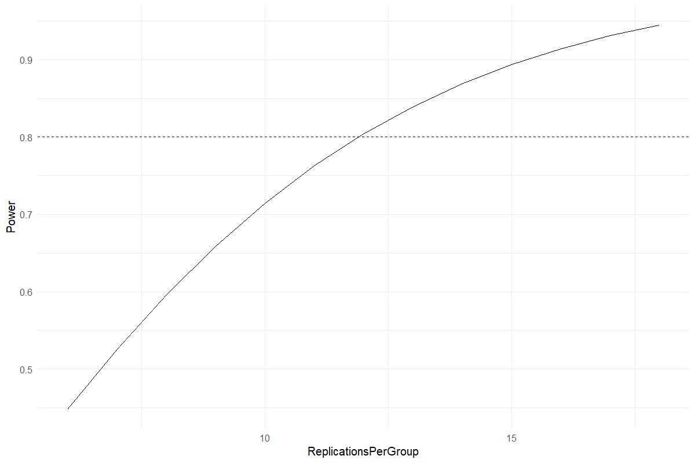
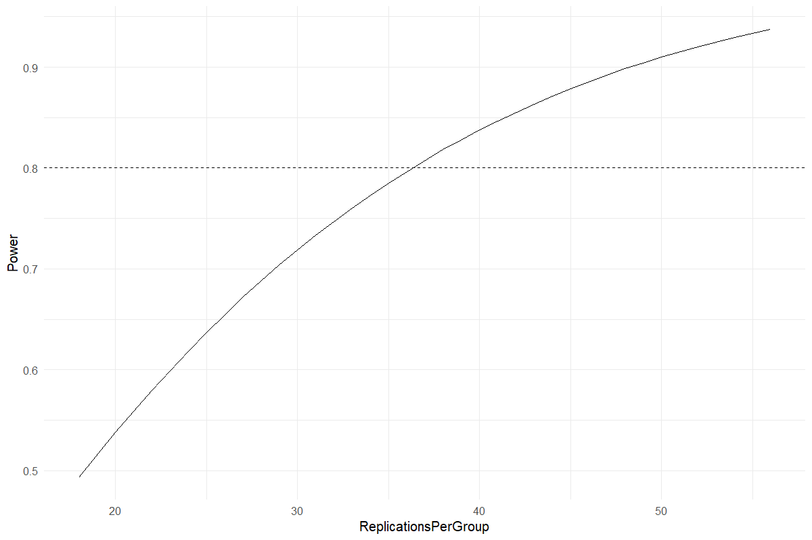

Worked analysis · 2 executable examples
Power & Replication Planning
Plan replication from an effect worth detecting
Question and data
Supply anticipated group means, residual SD, significance level and target power. Choose balanced CRD ANOVA or two independent groups.
Read and report the results
The recommended count is rounded up per group and power is recalculated for that integer design. The sensitivity curve shows how power changes with replication.
Run the examples
From the repository root, restore the locked dependencies and load the app functions. These are source-checkout examples, not an installed package API.
source("tools/example-cases.R")
load_drdesign()In Shiny, select this module from its workflow heading, upload the example CSV, map the columns, review observations and run. Each R example states the analysis options to reproduce.
power-anova
Synthetic teaching data; not evidence from a field experiment.
Input
| Mean |
|---|
| 20.000 |
| 22.000 |
| 24.000 |
Showing up to 8 of 3 observations. The CSV contains every row.
Analysis
data <- data.frame(Mean=c(20,22,24))
result <- run_power_planning(data$Mean,residual_sd=3,method="anova")Computed output
Recommended design 1 rows
| Replications Per Group | Groups | Total Units | Target Power | Achieved Power |
|---|---|---|---|---|
| 12.000 | 3 | 36 | 0.800 | 0.804 |
Sensitivity 13 rows
| Replications Per Group | Power |
|---|---|
| 6.000 | 0.448 |
| 7.000 | 0.525 |
| 8.000 | 0.596 |
| 9.000 | 0.659 |
| 10.000 | 0.714 |
| 11.000 | 0.762 |
| 12.000 | 0.804 |
| 13.000 | 0.839 |
| 14.000 | 0.869 |
| 15.000 | 0.894 |
| 16.000 | 0.914 |
| 17.000 | 0.931 |
| 18.000 | 0.945 |
Software versions 8 rows
| Source / term | Package | Version |
|---|---|---|
| R | 4.5.3 | |
| shiny | shiny | 1.13.0 |
| agricolae | agricolae | 1.3.7 |
| metan | metan | 1.19.0 |
| lme4 | lme4 | 2.0.1 |
| emmeans | emmeans | 2.0.2 |
| SpATS | SpATS | 1.0.20 |
| DiallelAnalysisR | DiallelAnalysisR | 0.6.0 |

power-two-sample
Synthetic teaching data; not evidence from a field experiment.
Input
| Mean |
|---|
| 20.000 |
| 22.000 |
Showing up to 8 of 2 observations. The CSV contains every row.
Analysis
data <- data.frame(Mean=c(20,22))
result <- run_power_planning(data$Mean,residual_sd=3,method="two-sample")Computed output
Recommended design 1 rows
| Replications Per Group | Groups | Total Units | Target Power | Achieved Power |
|---|---|---|---|---|
| 37.000 | 2 | 74 | 0.800 | 0.808 |
Sensitivity 30 rows
| Replications Per Group | Power |
|---|---|
| 18.000 | 0.493 |
| 20.000 | 0.538 |
| 21.000 | 0.559 |
| 22.000 | 0.579 |
| 24.000 | 0.618 |
| 25.000 | 0.637 |
| 26.000 | 0.654 |
| 27.000 | 0.672 |
| 29.000 | 0.704 |
| 30.000 | 0.719 |
| 31.000 | 0.733 |
| 33.000 | 0.760 |
| 34.000 | 0.773 |
| 35.000 | 0.785 |
| 36.000 | 0.797 |
| 38.000 | 0.818 |
| 39.000 | 0.828 |
| 40.000 | 0.838 |
| 41.000 | 0.847 |
| 43.000 | 0.863 |
| 44.000 | 0.871 |
| 45.000 | 0.879 |
| 47.000 | 0.892 |
| 48.000 | 0.898 |
| 49.000 | 0.904 |
| 50.000 | 0.910 |
| 52.000 | 0.920 |
| 53.000 | 0.925 |
| 54.000 | 0.930 |
| 56.000 | 0.938 |
Software versions 8 rows
| Source / term | Package | Version |
|---|---|---|
| R | 4.5.3 | |
| shiny | shiny | 1.13.0 |
| agricolae | agricolae | 1.3.7 |
| metan | metan | 1.19.0 |
| lme4 | lme4 | 2.0.1 |
| emmeans | emmeans | 2.0.2 |
| SpATS | SpATS | 1.0.20 |
| DiallelAnalysisR | DiallelAnalysisR | 0.6.0 |
Analysis settings 4 rows
| Setting | Value |
|---|---|
| Method | two-sample |
| ResidualSD | 3 |
| Alpha | 0.05 |
| TargetPower | 0.8 |

Reporting conventions
Tables: estimates and standard errors to 3 decimals; p-values below 0.001 shown as <0.001. Very small or large values use scientific notation. NA means unavailable or not applicable. CSV files retain numerical precision. Confidence levels and multiplicity corrections follow the stated analysis settings; shared letters indicate non-rejection, not equivalence.